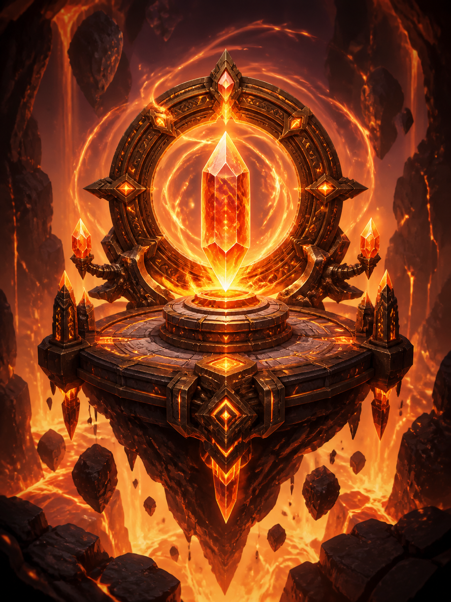
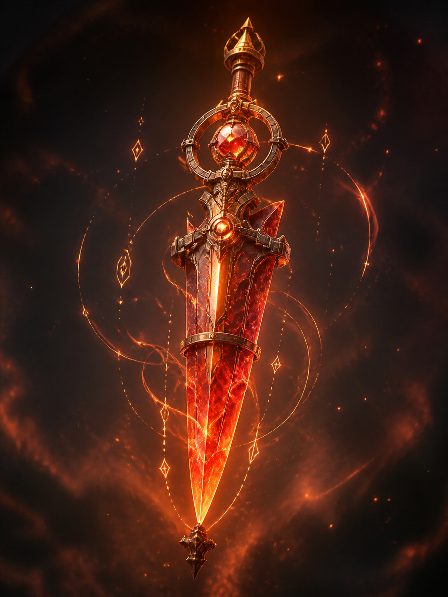
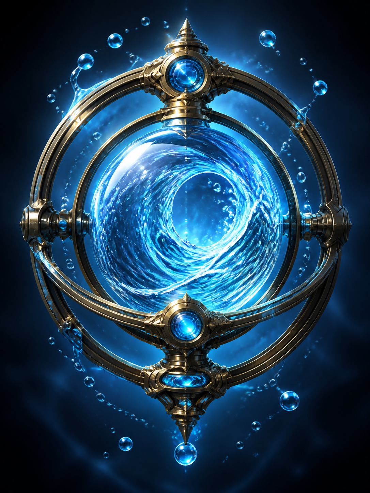
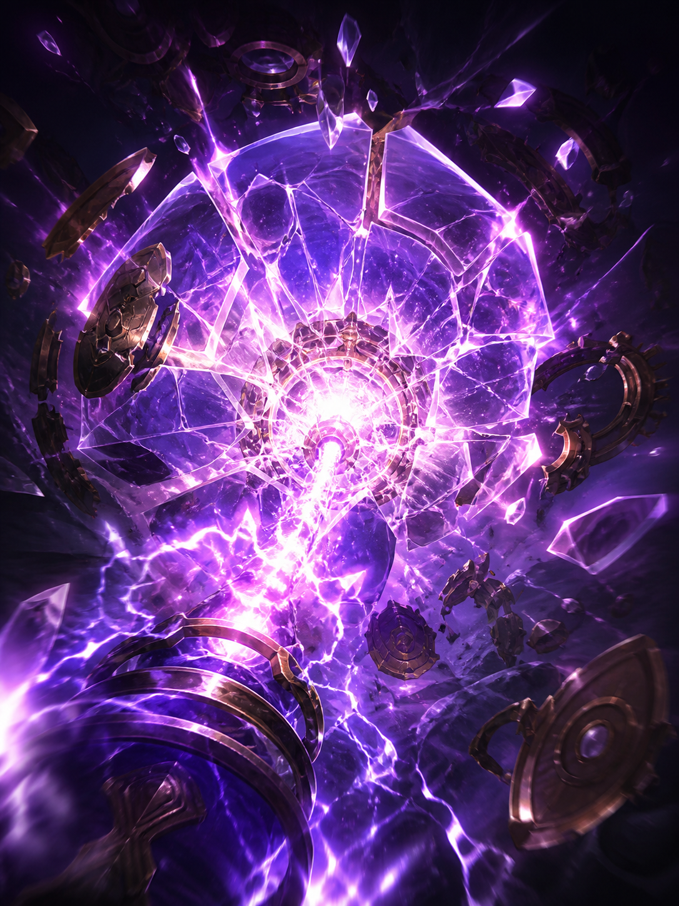

Nodo del Fuoco Ancestrale N  Nodo - Fuoco/Terra Richiede Fuoco 4 e Terra 2. La montagna ricorda ogni scintilla.
Lama Termica 2  Catalizzatore - Fuoco Puoi spostare 1 tua potenza Fuoco da un altro Nodo a questo. Taglia il freddo prima della materia.
Specchio Fluente 2  Catalizzatore - Acqua Puoi copiare l'elemento di un Catalizzatore valore 1 sullo stesso Nodo fino alla stabilizzazione. Riflette cio che serve, non cio che e vero.
Sovraccarico Eterico D  Distorsione - Interferenza Scegli un Nodo: il prossimo Catalizzatore incanalato su quel Nodo in questo turno vale +1. Troppa energia e quasi una risposta.